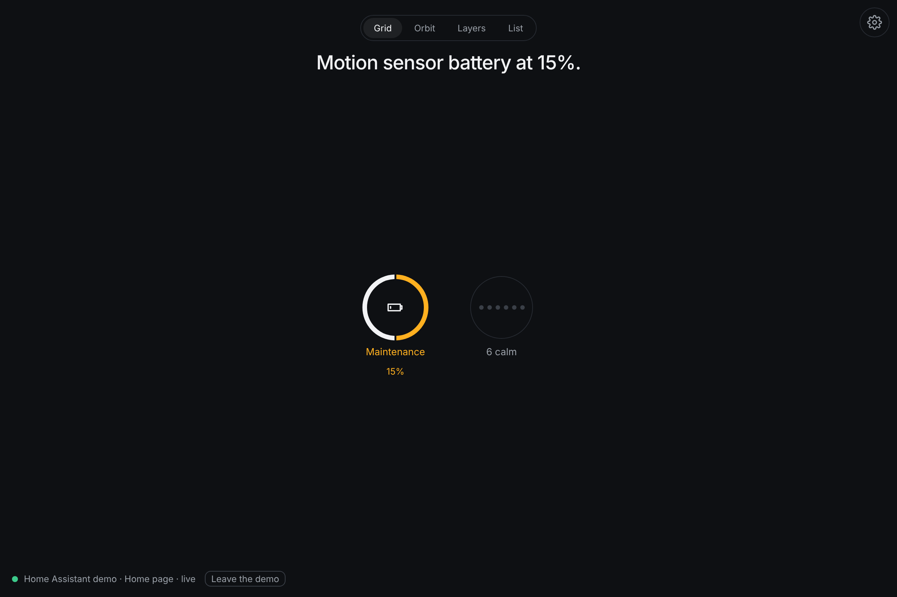
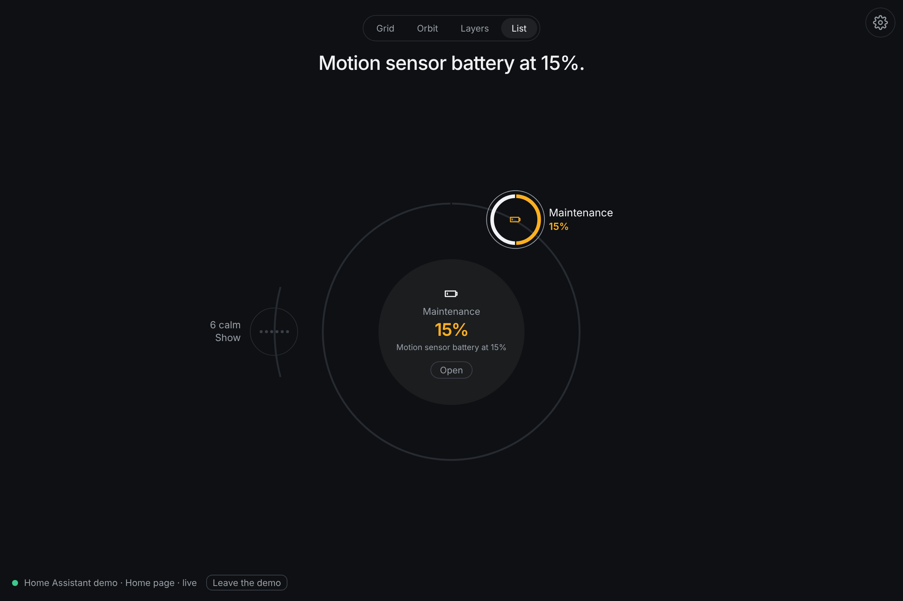
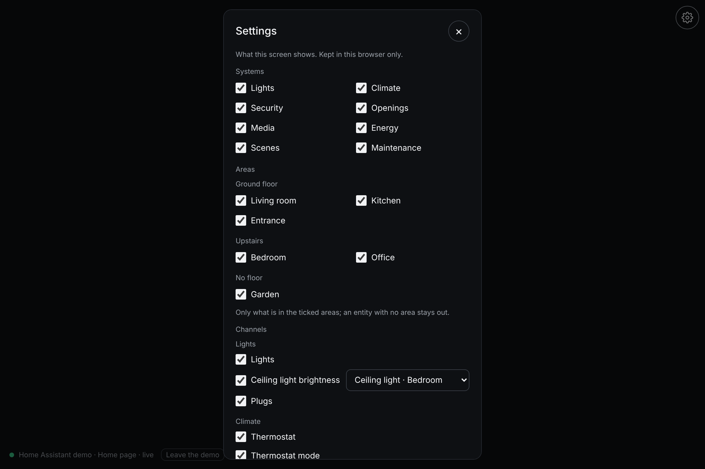

Pulse
The board
One level out from a system is the board: every system at once, each with the one reading that matters, the one calling the most in front. Four ways to look at it, over the same data.
Four views




Two axes
A home can be grouped by what things do or by where they are. Pulse has both, over the same four views.
- By system. Lights, climate, security, openings, media, energy, scenes, maintenance. Each system's channels are its layers.
- By room. Each area is one object. Its channels are the systems' channels read within that room: the kitchen's lights, its plugs, its humidity, its speaker. Floor by floor. What has no area is a room of its own.

The pulse
The center of the orbit is the home's pulse. With something calling, it holds the most serious alert and a way in; the rest call from their own rings around it. With nothing calling, it shows the latest changes. Its ring has one segment per system, painted when that system calls.
The same head everywhere
Every view keeps its head in the same place: the view switch, and under it the headline, what calls or that all is calm. The connection sits in the bottom left corner, the gear in the top right one. Nothing under the object feeds the latest changes; the orbit's center shows them when there is nothing else to say.
Order
Every view queues by urgency: the ones calling first, the most serious first, then the usual order. Picking one by hand puts it in the center or in front, but nothing else moves to make room. A critical alert opens its system on its own.
What is fine, folded
While something calls, the systems that are fine fold away: one quiet tile in the grid, one button under the layers, one button on the list's outer ring. Open them once and that screen remembers. With nothing calling there is nothing to fold.
How an alert looks
What calls never changes size. Its ring is drawn heavier, in its alert's tone, and a wave leaves it and fades, quicker when it is serious. What is fine is a thin line in a quiet tone.
The gear
Whoever looks at a screen can tune it without touching the setup: the gear at the top right opens a small panel. Changes apply as they are made and are kept in that browser only, so the tablet in the kitchen and the phone in a pocket can show different things from the same source.

| Setting | What it chooses |
|---|---|
| Systems | Which systems the board shows |
| Areas | Only what is in these areas, grouped by floor |
| Channels | Which channels each system shows, and for a channel that follows one entity, which one |
| Board view | Grid, orbit, layers or list |
| Group by | Systems or rooms |
| Open inside | The board, or a system to start in |
| Layers | How many systems the layers view stacks; how many channels a system stacks |
| Look | The dial full or open at the bottom; the day ring bare or with hour marks; ring ends square or rounded |
| Theme | Graphite, Paper or Deep, which tell an alert by hue; or Slate, Mist, Fog and Night, which keep to one blue-grey family and tell it by tone |
The host sets the frame: which systems and areas the gear may offer, and the defaults. "Back to defaults" returns to what the host said.
On a phone
A phone looks at one system at a time: two visible layers, the systems as dots under the object to move sideways, and the one calling the most opens first. The board is one step out.